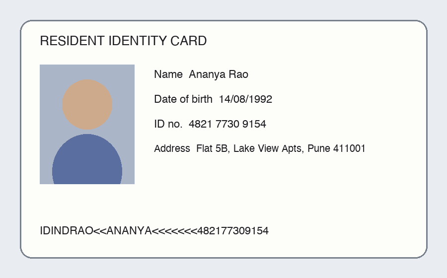
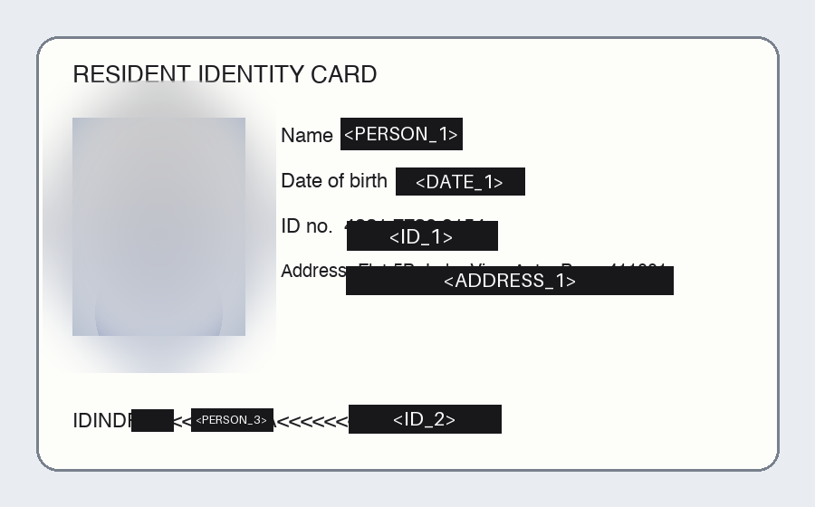
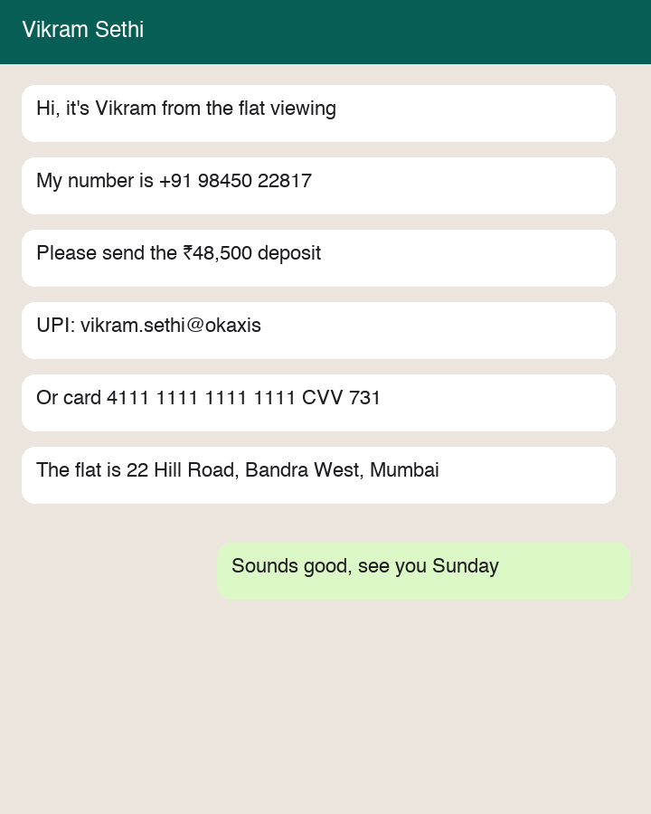
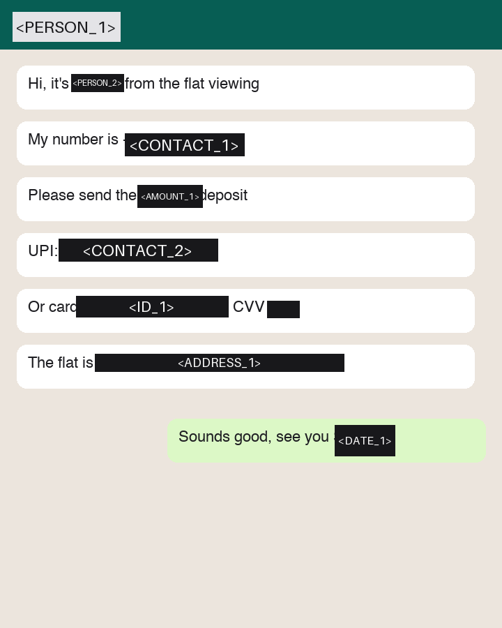
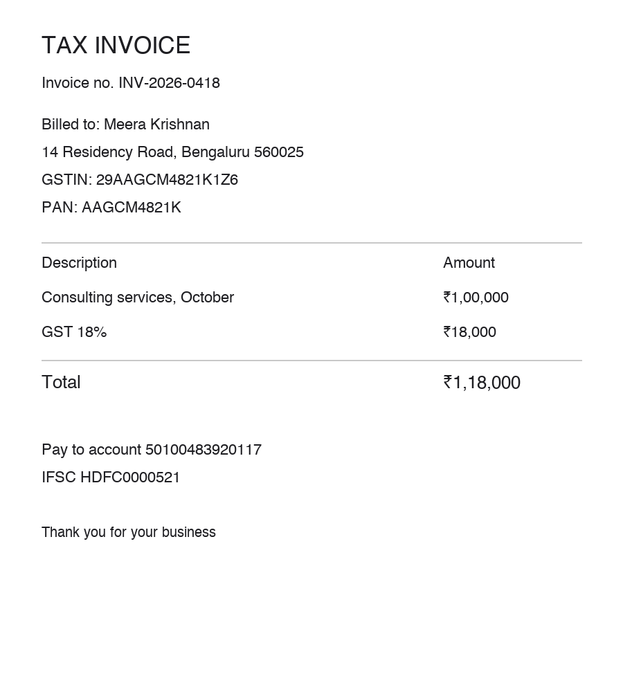
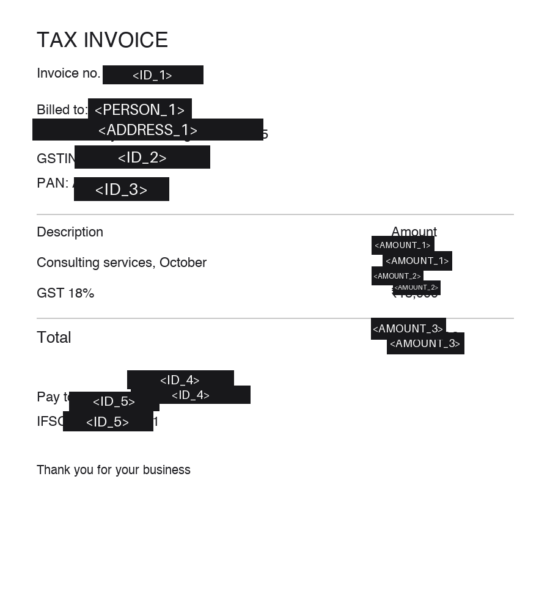
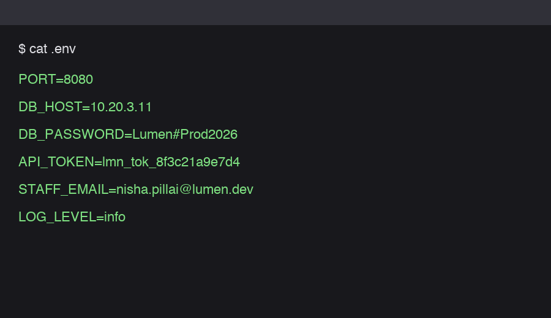
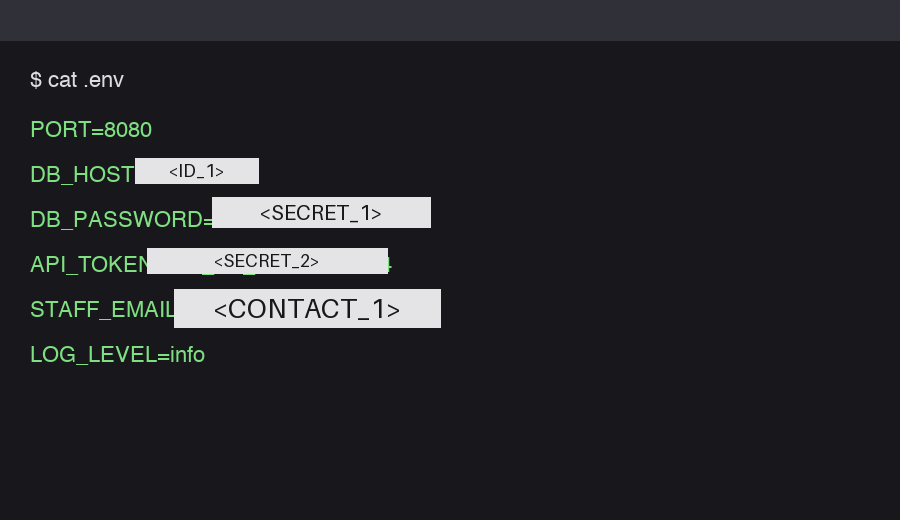
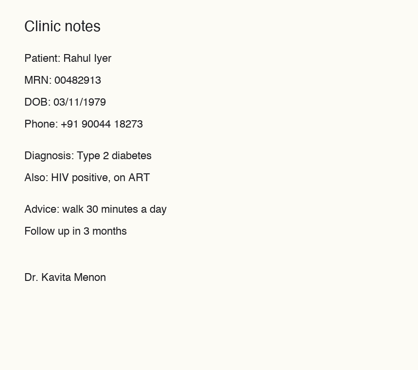
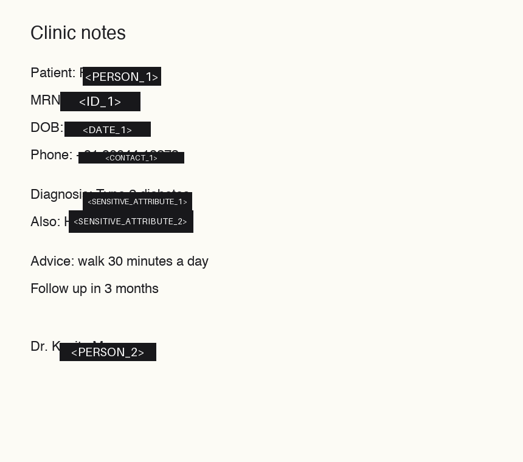

Synthetic images, made-up data. Bars carry the vault placeholder each value gets in chat.
7/7 values masked · leaked: none · over-masked: none · re-scan ok · 25.8 s


RESIDENT IDENTITY CARD Name <PERSON_1> Date of birth <DATE_1> ID no. <ID_1> Address <ADDRESS_1> IDIND<PERSON_2><<<PERSON_3><<<<<<<<ID_2>
8/8 values masked · leaked: none · over-masked: none · re-scan ok · 27.4 s


<PERSON_1> Hi, it's <PERSON_2> from the flat viewing My number is <CONTACT_1> Please send the <AMOUNT_1> deposit UPI: <CONTACT_2> Or card <ID_1> CVV <SECRET_1> The flat is <ADDRESS_1> Sounds good, see you <DATE_1>
9/10 values masked · leaked: AMOUNT “₹18,000” · over-masked: “Pay to account” · re-scan ok · 34.7 s


TAX INVOICE Invoice no. <ID_1> Billed to: <PERSON_1> <ADDRESS_1> GSTIN: <ID_2> PAN: <ID_3> Description Amount Consulting services, October <AMOUNT_1> GST 18% <AMOUNT_2> Total <AMOUNT_3> Pay to account <ID_4> IFSC <ID_5> Thank you for your business
4/4 values masked · leaked: none · over-masked: none · re-scan ok · 25.8 s


$ cat .env PORT=8080 DB_HOST=<ID_1> DB_PASSWORD=<SECRET_1> API_TOKEN=<SECRET_2> STAFF_EMAIL=<CONTACT_1> LOG_LEVEL=info
4/7 values masked · leaked: CONTACT “+91 90044 18273”, SENSITIVE_ATTRIBUTE “Type 2 diabetes”, PERSON “Kavita Menon” · over-masked: none · re-scan FAILED · 23.3 s


Clinic notes Patient: <PERSON_1> MRN: <ID_1> DOB: <DATE_1> Phone: <CONTACT_1> Diagnosis: <SENSITIVE_ATTRIBUTE_1> Also: <SENSITIVE_ATTRIBUTE_2> Advice: walk 30 minutes a day Follow up in 3 months Dr. <PERSON_2>